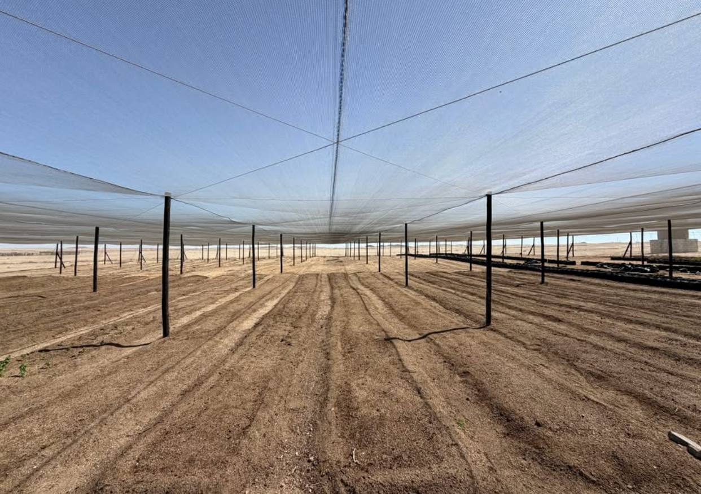

Farming adapted to your rainfall, heat, soils and water
Climate-smart farming means improving productivity and livelihoods while strengthening the ability of farming systems to cope with climate variability — no one-size-fits-all package.
How we make farms more resilient
💧 Water-smart production
Irrigation scheduling, drip systems where suitable, leak reduction, soil cover, rainwater capture where feasible and monitoring water availability.
🪱 Soil conservation
Minimum or reduced soil disturbance where appropriate, erosion control, organic matter improvement, cover crops and careful traffic management.
🌾 Resilient crop planning
Crop and variety selection suited to local conditions, weather-informed planting windows, diversification and staggered production.
🧪 Efficient nutrient management
Soil-informed decisions, split applications, correct placement and timing, and integration of organic materials with mineral fertilizers.
🐞 Integrated pest & disease management
Regular scouting, prevention, crop hygiene, rotation, resistant varieties, biological and physical controls, and judicious chemical intervention.
📊 Farm risk management
Seasonal planning, production records, contingency plans and practical review of costs, yields and market opportunities.
Building soil health and ecological balance
We promote organic and agroecological practices that build soil health and support ecological balance. Organic farming is treated as a production system requiring careful planning and verification of input suitability — not simply the absence of synthetic products. Where a client seeks certified organic status, the farm must follow the applicable certification standard and approved input rules.
Integrated Pest Management (IPM)
IPM combines prevention, observation and compatible controls to keep pests and diseases at manageable levels while reducing unnecessary pesticide use and protecting people, beneficial organisms and the environment.
Integrated Nutrient Use Management
Combining mature compost, well-managed manure, crop residues and cover crops with mineral fertilizers when needed — matching nutrients to crop demand, improving soil organic matter and reducing losses.

Principles we farm by
- Maintain soil cover and build soil organic matter.
- Use water efficiently and protect water sources.
- Rotate and diversify crops to support soil health and interrupt pest cycles.
- Conserve beneficial insects and on-farm biodiversity.
- Use inputs responsibly and follow product labels, safety requirements and local regulations.
- Track farm costs, yields and resource use to support informed decisions.
Ready to grow?
Book a farm visit, request a quote or chat to us on WhatsApp.